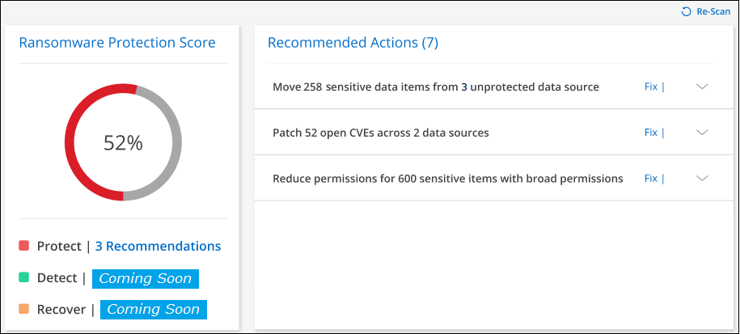

Dokumentationsänderungen beantragen
Dokumentationsänderungen beantragen In GitHub bearbeiten
In GitHub bearbeiten Leitfaden für Beitragende
Leitfaden für BeitragendeVerwalten von Cyber-Sicherheitsempfehlungen für Ihre Datenquellen
Beitragende
Nutzen Sie das Ransomware Protection Dashboard, um einen Überblick über die Cyber-Ausfallsicherheit aller Ihrer BlueXP (früher Cloud Manager) Arbeitsumgebungen und zusätzlichen Datenquellen zu erhalten. Sie können in jedem Bereich nach unten gehen, um weitere Details und mögliche Korrekturmaßnahmen zu finden.
Wählen Sie im Menü BlueXP links die Option Schutz > Ransomware-Schutz.

Ransomware-Schutzpunktzahl und empfohlene Maßnahmen
Das Bedienfeld „Ransomware Protection Score“ bietet eine einfache Möglichkeit, zu erkennen, wie stabil Ihre Daten bei einem Ransomware-Angriff ist. Es ist eine Zusammenfassung aller Maßnahmen, die empfohlen werden, um Ihre Datensicherheit und Cyber-Ausfallsicherheit zu verbessern. Dieses Panel funktioniert in Verbindung mit dem Fenster Empfohlene Maßnahmen. Es gibt zwei Teile der Ransomware Protection Score Panel:
-
Der Gesamtbewertung für Ihre Daten (0 – 100 % geschützt)
Die Bewertung basiert auf einer gewichteten Berechnung aller möglichen Empfehlungen.
-
Wie viele empfohlene Maßnahmen sind verfügbar, um Ihren Schutz auf 100 % zu steigern, wenn Sie die Empfehlungen implementieren.
Die drei Arten der empfohlenen Maßnahmen entsprechen dem "NIST-Framework für Cyber-Sicherheit":
-
Sichern
-
Erkennen
-
Recovery
-

Auf dieser Beispielseite gibt es sieben empfohlene Aktionen für die Kategorie „Schutz“. Die erste Empfehlung gilt für 258 Dateien.
Dieses Panel unterstützt Arbeitsumgebungen und Datenquellen, die dem Cloud Data Sense hinzugefügt wurden.
Beachten Sie, dass die Empfehlungen pro Datenquelle gelten. Wenn also dieselbe Empfehlung für 3 Datenquellen relevant ist, wird sie als 3 Empfehlungen gezählt.
Sie können auf klicken  So erweitern Sie jede empfohlene Aktion wie unten gezeigt.
So erweitern Sie jede empfohlene Aktion wie unten gezeigt.

Um die detaillierte Liste der Daten zu sehen, die mit einer empfohlenen Aktion identifiziert wurden, klicken Sie auf die Schaltfläche untersuchen und Sie werden auf die Cloud Data Sense Untersuchungsseite mit der Liste aller Dateien weitergeleitet, die die Kriterien für die empfohlene Aktion erfüllen.
Dann können Sie entscheiden, ob Sie die empfohlene Aktion auf alle diese Dateien anwenden möchten, oder nur auf einigen von ihnen.
Nachdem Sie die empfohlene Aktion behoben haben, wird die nächste Aktualisierung der Ransomware Protection Score Panel (alle 5 Minuten) die Zahl für die Punktzahl anpassen. Sie können auch auf die Schaltfläche Re-Scan klicken, um die Seite jetzt zu aktualisieren.
Liste empfohlener Maßnahmen
Hier handelt es sich um die derzeit aufgezeichneten Maßnahmen und Lösungsvorschläge.
| Empfohlene Maßnahmen | Beschreibung | Mögliche Lösung |
|---|---|---|
Reduzieren Sie die Berechtigungen für X-sensible Elemente mit breiten Berechtigungen |
In Ihren Datenquellen von Cloud Data Sense finden Sie sensible Dateien mit offenen Berechtigungen. Dazu zählen alle sensiblen Daten (personenbezogene Daten und sensible personenbezogene Daten), die „offen für Unternehmen“ oder „öffentlich zugänglich“ sind. |
Klicken Sie für jede Datenquelle auf die Schaltfläche untersuchen und Sie werden zur Seite Data Sense Investigation weitergeleitet, auf der Sie alle gefährdeten sensiblen Dateien anzeigen und weitere Maßnahmen ergreifen können, um dieses Risiko zu reduzieren. Dazu gehört auch, wie die breiten Berechtigungen auf diesen Dateien reduziert werden können. |
Verschieben Sie X-sensible Elemente von nicht geschützten Y-Datenquellen in sichere Speicherorte |
Sensible Daten sind durch Cloud Data Sense in ungeschützten Datenquellen vorhanden. An diesen Orten kann die Ransomware-Datensicherungssoftware nicht schützen. In der Regel verfügen IT-Abteilungen über Richtlinien, die sensible Daten von bestimmten Unternehmensstandorten einschränken. Diese empfohlene Aktion ermöglicht es Ihnen, die Dateien mit sensiblen Daten zu identifizieren und sie in eine sicherere Datenquelle zu verschieben, wo sensible *gespeichert werden darf. |
Mit Data Sense können Sie diese Dateien schnell in eine besser geschützte Datenquelle verschieben. Sie werden die Funktion „Data Sense“ nutzen "Quelldateien in eine NFS-Freigabe verschieben". |
Patch X Open CVEs über Y-Datenquellen hinweg |
Nicht patched CVEs (allgemeine Schwachstellen und Exposé) wurden auf den On-Premises-ONTAP-Systemen und/oder Cloud Volumes ONTAP-Systemen gefunden. Diese Probleme werden nur erkannt, wenn das Produkt Digital Advisor (ehemals Active IQ Digital Advisor) in Ihre Speichersysteme integriert ist. Hierbei handelt es sich um bekannte Schwachstellen in NetApp Storage-Systemen, deren Behebung des CVE-Problems ermittelt wurde. NetApp CVEs sind im aufgeführt "Produktsicherheitsseite". |
Klicken Sie für jede Datenquelle auf die Schaltfläche Digital Advisor, und Sie werden im Digital Advisor zur Seite Security Vulnerabilities weitergeleitet. Dort werden die Details zu den geöffneten CVEs sowie die empfohlene Aktion zum Beheben der einzelnen CVE angezeigt. Häufig wird die Lösung auch auf ein Upgrade der ONTAP Software auf dem System ausgeführt. "Erfahren Sie mehr über die Seite Sicherheitslücke". |
Cyber Resilience Map
Die Cyber Resilience Map ist der Hauptbereich im Dashboard. Es ermöglicht Ihnen, alle Ihre Arbeitsumgebungen und Datenquellen visuell zu sehen und relevante Informationen zur Cyber-Ausfallsicherheit anzuzeigen.

Die Karte besteht aus drei Teilen:
- Linker Bereich
-
Zeigt eine Liste der Warnungen an, für die der Service alle Datenquellen überwacht. Es gibt außerdem die Anzahl jeder bestimmten Warnung an, die in Ihrer Umgebung aktiv ist. Eine große Anzahl von Warnungen kann ein guter Grund sein, um zu versuchen, diese Warnmeldungen zuerst zu lösen.
- Mittelplatte
-
Zeigt alle Datenquellen, Dienste und Active Directory in einem grafischen Format an. Gesunde Umgebungen weisen einen grünen Indikator auf, und Umgebungen mit einem Warnmeldungsanzeiger haben einen roten Indikator.
- Rechte Abdeckung
-
Nachdem Sie auf eine Datenquelle geklickt haben, die eine rote Anzeige aufweist, zeigt dieses Fenster die Warnungen für diese Datenquelle an und gibt Empfehlungen zur Behebung der Warnmeldung aus. Die Alarme werden so sortiert, dass die letzten Warnmeldungen zuerst aufgeführt werden. Viele Empfehlungen führen Sie zu einem anderen BlueXP-Service, wo Sie das Problem lösen können.
Es handelt sich dabei um die derzeit nachverfolgten Warnungen und vorgeschlagenen Korrekturmaßnahmen.
| Alarm | Beschreibung | Korrekturmaßnahmen |
|---|---|---|
Hohe Datenverschlüsselungsraten gefunden |
Eine anormale Zunahme des Prozentsatzes der verschlüsselten Dateien oder beschädigten Dateien in der Datenquelle ist aufgetreten. Das bedeutet, dass der Prozentsatz der verschlüsselten Dateien in den letzten 7 Tagen um mehr als 20 % erhöht wurde. Wenn zum Beispiel 50 % der Dateien verschlüsselt sind, dann erhöht sich diese Zahl einen Tag später auf 60 %, Sie würden diese Warnung sehen. |
Klicken Sie auf den Link, um das zu starten "Untersuchungsseite „Data Sense“". Dort können Sie die Filter für die spezifische Arbeitsumgebung und Kategorie (verschlüsselt und beschädigt) auswählen, um die Liste aller verschlüsselten und beschädigten Dateien anzuzeigen. |
Sensible Daten mit breiten Berechtigungen gefunden |
Sensible Daten werden in Dateien gefunden und die Zugriffsberechtigungen sind in einer Datenquelle zu hoch. |
Klicken Sie auf den Link, um das zu starten "Untersuchungsseite „Data Sense“". Dort können Sie die Filter für die spezifische Arbeitsumgebung, Sensitivity Level (Sensitive Personal) und Open Permissions auswählen, um die Liste der Dateien anzuzeigen, die dieses Problem haben. |
Ein oder mehrere Volumes werden mit Cloud Backup nicht gesichert |
Einige Volumes in der Arbeitsumgebung werden nicht mit geschützt "Cloud-Backup". |
Klicken Sie auf den Link, um Cloud Backup zu starten. Dann können Sie die Volumes identifizieren, die nicht in der Arbeitsumgebung gesichert werden, und entscheiden, ob Sie Backups auf diesen Volumes aktivieren möchten. |
Ein oder mehrere Repositorys (Volumes, Buckets usw.) in Ihren Datenquellen werden nicht nach Data Sense gescannt |
Einige Daten in Ihren Datenquellen werden nicht mit gescannt "Cloud-Daten Sinnvoll" Um Compliance- und Datenschutzbedenken zu identifizieren und Optimierungsmöglichkeiten zu finden. |
Klicken Sie auf den Link, um den Datensense zu starten und das Scannen und die Zuordnung für die nicht gescannten Elemente zu aktivieren. |
On-box Anti-Ransomware ist nicht für alle Volumes aktiv |
Einige Volumes im lokalen ONTAP-System haben die nicht "NetApp Funktion zur Bekämpfung von Ransomware" Aktiviert. |
Klicken Sie auf den Link, und Sie werden zu weitergeleitet Härten Sie Ihre ONTAP Umgebung Panel Und in die Arbeitsumgebung mit dem Problem. Dort können Sie herausfinden, wie das Problem am besten behoben werden kann. |
Die ONTAP-Version wurde nicht aktualisiert |
Die auf Ihren Clustern installierte Version der ONTAP Software entspricht nicht den Empfehlungen von "NetApp Leitfaden zur verstärkte Sicherheit von ONTAP-Systemen". |
Klicken Sie auf den Link, und Sie werden zu weitergeleitet Härten Sie Ihre ONTAP Umgebung Panel Und in die Arbeitsumgebung mit dem Problem. Dort können Sie herausfinden, wie das Problem am besten behoben werden kann. |
Snapshots sind nicht für alle Volumes konfiguriert |
Einige Volumes in der Arbeitsumgebung sind nicht durch die Erstellung von Volume Snapshots geschützt. |
Klicken Sie auf den Link, und Sie werden zu weitergeleitet Härten Sie Ihre ONTAP Umgebung Panel Und in die Arbeitsumgebung mit dem Problem. Dort können Sie herausfinden, wie das Problem am besten behoben werden kann. |
Das Auditing von Dateivorgängen ist nicht für alle SVMs aktiviert |
Einige Storage-VMs in der Arbeitsumgebung sind nicht für das Filesystem-Auditing aktiviert. Es wird empfohlen, damit Sie die Benutzeraktionen auf Ihren Dateien verfolgen können. |
Klicken Sie auf den Link, und Sie werden zu weitergeleitet Härten Sie Ihre ONTAP Umgebung Panel Und in die Arbeitsumgebung mit dem Problem. Dort können Sie herausfinden, ob Sie NAS-Prüfungen auf Ihren SVMs aktivieren müssen. |
Wichtige Daten-Repositorys durch Sensibilität
Das Fenster Top Data Repositories by Sensitivity Level enthält bis zu den vier wichtigsten Daten-Repositorys (Arbeitsumgebungen und Datenquellen), die die sensibelsten Elemente enthalten. Das Balkendiagramm für jede Arbeitsumgebung ist in folgende Kategorien unterteilt:
-
Nicht-sensible Daten
-
Persönliche Daten
-
Sensible personenbezogene Daten

Sie können mit der Maus auf jeden Abschnitt zeigen, um die Gesamtanzahl der Elemente in jeder Kategorie anzuzeigen.
Klicken Sie auf die einzelnen Bereiche, um die gefilterten Ergebnisse auf der Seite „Data Sense Investigation“ anzuzeigen, damit Sie weitere Informationen finden können.
Domänenadministrator-Gruppenkontrolle
Das Fenster Domain Administrator Group Control zeigt die letzten Benutzer an, die zu Ihren Domänenadministratorgruppen hinzugefügt wurden, damit Sie sehen können, ob alle Benutzer in diesen Gruppen zugelassen werden sollen. Dieser muss unbedingt vorhanden sein "Integration eines globalen Active Directory" In Cloud Data Sense für dieses Panel aktiv sein.

Zu den Standard-Administratorgruppen gehören „Administratoren“, „Domänen-Administratoren“, „Enterprise Admins“, „Enterprise Key Admins“ und „Key Admins“.
Daten, die nach Typen offener Berechtigungen aufgelistet sind
Im Fenster „_Öffnen“ wird der Prozentsatz für jeden Berechtigungstyp angezeigt, der für alle Dateien vorhanden ist, die gescannt werden. Das Diagramm wird aus Data Sense bereitgestellt und zeigt die folgenden Berechtigungstypen an:
-
Kein Offener Zugriff
-
Steht Unternehmen offen
-
Öffentlich zugänglich
-
Unbekannter Zugriff

Sie können mit der Maus auf jeden Abschnitt zeigen, um den Prozentsatz und die Gesamtzahl der Dateien in jeder Kategorie anzuzeigen.
Klicken Sie auf die einzelnen Bereiche, um die gefilterten Ergebnisse auf der Seite „Data Sense Investigation“ anzuzeigen, damit Sie weitere Informationen finden können.
Daten, die in verschlüsselten Dateien aufgeführt sind
Das Fenster verschlüsselte Dateien zeigt die 4 wichtigsten Datenquellen mit dem höchsten Prozentsatz an Dateien an, die im Laufe der Zeit verschlüsselt sind. Dies sind in der Regel Elemente, die kennwortgeschützt waren. Dazu werden die Verschlüsselungsraten der letzten 7 Tage verglichen, um zu sehen, welche Datenquellen eine Zunahme von über 20 % haben. Eine Zunahme dieser Menge könnte bedeuten, dass Ransomware bereits Ihr System angegriffen wird.

Klicken Sie auf eine Zeile für eine der Datenquellen, um die gefilterten Ergebnisse auf der Seite „Data Sense Investigation“ anzuzeigen, damit Sie weitere Untersuchungen durchführen können.
Status der Erhöhung des Status der ONTAP Systemhärtung
Das Fenster Harden Your ONTAP Environment enthält den Status bestimmter Einstellungen in Ihren ONTAP-Systemen, die verfolgen, wie sicher Ihre Bereitstellung gemäß dem ist "NetApp Leitfaden zur verstärkte Sicherheit von ONTAP-Systemen" Und zum "ONTAP Anti-Ransomware-Funktion" Die ungewöhnliche Aktivitäten proaktiv erkennen und warnen.
Sie können die Empfehlungen prüfen und anschließend entscheiden, wie Sie potenzielle Probleme beheben möchten. Sie können die Schritte befolgen, um die Einstellungen auf Ihren Clustern zu ändern, die Änderungen auf ein anderes Mal zu verschieben oder den Vorschlag zu ignorieren.
Dieses Panel unterstützt derzeit On-Prem ONTAP, Cloud Volumes ONTAP und Amazon FSX für NetApp ONTAP Systeme.
Folgende Einstellungen werden verfolgt:
| Härtungsziel | Beschreibung | Korrekturmaßnahmen |
|---|---|---|
ONTAP Anti-Ransomware |
Der Prozentsatz der Volumes, für die integrierte Ransomware aktiviert ist. Nur für ONTAP-Systeme vor Ort gültig. Ein grünes Statussymbol zeigt an, dass > 85 % der Volumes aktiviert sind. Gelb gibt an, dass 40-85% aktiviert sind. Rot zeigt an, dass < 40 % aktiviert sind. |
"Anti-Ransomware auf Ihren Volumes aktivieren" Verwenden von System Manager. |
NAS-Auditing |
Die Anzahl der Storage VMs, für die Dateisystemprüfungen aktiviert sind. Ein grünes Statussymbol zeigt an, dass bei > 85 % der SVMs die Prüfung des NAS-Filesystems aktiviert ist. Gelb gibt an, dass 40-85% aktiviert sind. Rot zeigt an, dass < 40 % aktiviert sind. |
"Erfahren Sie, wie NAS-Audits auf SVMs möglich werden" Verwenden der CLI. |
ONTAP-Version |
Die auf den Clustern installierte Version der ONTAP Software. Ein grünes Statussymbol zeigt an, dass die Version aktuell ist. Ein gelbes Symbol zeigt an, dass der Cluster hinter 1 oder 2 Patch-Versionen oder 1 Minor-Version für On-Prem-Systeme oder hinter 1 Hauptversion für Cloud Volumes ONTAP steht. Ein rotes Symbol zeigt an, dass der Cluster hinter 3 Patch-Versionen steht, 2 Minor-Versionen, 1 Hauptversion für On-Prem-Systeme oder hinter 2 Hauptversionen für Cloud Volumes ONTAP. |
"Für ein Upgrade von On-Premises-Clustern empfiehlt sich die beste Lösung" Oder "Ihre Cloud Volumes ONTAP Systeme". |
Snapshots |
Ist die Snapshot-Funktion für Daten-Volumes aktiviert und welcher Prozentsatz der Volumes Snapshot Kopien aufweisen. Ein grünes Statussymbol zeigt an, dass > 85 % der Volumes Snapshots aktiviert sind. Gelb gibt an, dass 40-85% aktiviert sind. Rot zeigt an, dass < 40 % aktiviert sind. |
"Aktivieren Sie Volume-Snapshots in Ihren On-Premises-Clustern", Oder "Auf Ihren Cloud Volumes ONTAP Systemen", Oder "Auf Ihren FSX für ONTAP Systemen". |
Status von Berechtigungen für Ihre kritischen Geschäftsdaten
Das Fenster Analyse der Berechtigungen für geschäftskritische Daten zeigt den Berechtigungsstatus von Daten an, die für Ihr Unternehmen von entscheidender Bedeutung sind. Damit können Sie schnell einschätzen, wie gut Sie Ihre geschäftskritischen Daten schützen.

In diesem Bereich werden zunächst Daten basierend auf den von uns ausgewählten Standardrichtlinien angezeigt. Sie können jedoch die 2 wichtigsten Daten Sense Policies auswählen, die Sie erstellt haben, um Ihre wichtigsten Geschäftsdaten anzuzeigen. Informieren Sie sich darüber "Erstellen Sie Ihre Richtlinien mit Data Sense".
Das Diagramm zeigt eine Berechtigungsanalyse aller Daten, die den Kriterien Ihrer Richtlinien entsprechen. Hier werden die Anzahl der Elemente aufgeführt, die:
-
Offen für öffentliche Berechtigungen - die Elemente, die Data Sense als offen für die Öffentlichkeit betrachtet
-
Offen für Unternehmensberechtigungen – die Elemente, die von Data Sense als für Unternehmen offen erachtet werden
-
Keine offenen Berechtigungen - die Elemente, die Data Sense als keine offenen Berechtigungen betrachtet
-
Unbekannte Berechtigungen - die Elemente, die Data Sense als unbekannte Berechtigungen betrachtet
Bewegen Sie den Mauszeiger über die einzelnen Balken in den Diagrammen, um die Anzahl der Ergebnisse in jeder Kategorie anzuzeigen. Klicken Sie auf eine Leiste, und die Seite Data Sense Investigation wird angezeigt. So können Sie weitere Informationen darüber finden, welche Elemente über offene Berechtigungen verfügen und ob Sie Anpassungen an Dateiberechtigungen vornehmen sollten.
Backup-Status Ihrer geschäftskritischen Daten
Das Fenster Backup Status zeigt an, wie verschiedene Datenkategorien durch Cloud Backup geschützt werden. So finden Sie heraus, wie umfassend Ihre wichtigsten Daten-Kategorien gesichert werden, falls Sie eine Recovery aufgrund eines Ransomware-Angriffs durchführen müssen. Diese Daten stellen eine visuelle Darstellung dar, wie viele Elemente einer bestimmten Kategorie in einer Arbeitsumgebung gesichert werden.
In diesem Bereich wird nur On-Premises-ONTAP- und Cloud Volumes ONTAP-Arbeitsumgebungen angezeigt, die bereits über Cloud Backup und gescannt wurden, die über Cloud Data Sense verwendet werden.

Zunächst zeigt dieses Panel Daten basierend auf Standardkategorien, die wir ausgewählt haben. Sie können aber auch die Kategorien von Daten auswählen, die Sie nachverfolgen möchten; z. B. Codes von Dateien, Verträgen usw. Siehe die vollständige Liste von "Kategorien" Die sind von Cloud Data Sense für Ihre Arbeitsumgebungen verfügbar. Wählen Sie dann bis zu 4 Kategorien aus.
Wenn die Daten ausgefüllt sind, bewegen Sie den Mauszeiger über jedes Quadrat in den Diagrammen, um die Anzahl der Dateien anzuzeigen, die aus allen Dateien in derselben Kategorie in der Arbeitsumgebung gesichert werden. Ein grünes Quadrat bedeutet, dass 85 % oder mehr Ihrer Dateien gesichert werden. Ein gelbes Quadrat bedeutet, dass 40% bis 85% der Dateien gesichert werden. Und ein rotes Rechteck bedeutet, dass 40 % oder weniger Dateien gesichert werden.
Sie können am Ende der Zeile auf die Schaltfläche Cloud Backup klicken, um zur Cloud Backup-Schnittstelle zu wechseln, um Backups auf mehr Volumes in jeder Arbeitsumgebung zu ermöglichen.
Schwachstellen im Storage-System
Das Fenster Speichersystemschwachstellen zeigt die Gesamtzahl der hohen, mittleren und niedrigen Sicherheitslücken, die das Active IQ Digital Advisor Tool auf jedem Ihrer ONTAP Cluster gefunden hat. Hohe Schwachstellen sollten sofort untersucht werden, um sicherzustellen, dass Ihre Systeme nicht für Angriffe geöffnet sind.
-
Der BlueXP Connector muss vor Ort installiert werden, nicht bei einem Cloud-Provider.
-
Sie benötigen ein ONTAP Cluster vor Ort
-
Das Cluster ist in Active IQ konfiguriert
-
Sie müssen ein vorhandenes NSS-Konto in BlueXP registriert haben, um Ihre Cluster anzuzeigen und die Active IQ Digital Advisor-Benutzeroberfläche anzuzeigen.
Beachten Sie, dass Sie den Active IQ Digital Advisor direkt anzeigen können, indem Sie im BlueXP-Menü * Health > Digital Advisor* auswählen.

Klicken Sie auf die Art der Sicherheitsanfälligkeit (hoch, Mittel, Niedrig), die für einen der Cluster angezeigt werden soll, und Sie werden auf die Seite Sicherheitslücke in Active IQ Digital Advisor umgeleitet. (Mehr über diese Seite finden Sie im "Active IQ Digital Advisor Dokumentation".) Sie können die Sicherheitsanfälligkeiten anzeigen und anschließend die empfohlene Aktion befolgen, um das Problem zu beheben. Oftmals ist es dann die Lösung, ein Upgrade der ONTAP Software auf eine Point-Release- oder eine Vollversion durchzuführen, die die Sicherheitsanfälligkeit behebt.
Daten in Volumes, die mit SnapLock geschützt werden
Mit der NetApp SnapLock Technologie auf den ONTAP Volumes bleiben Dateien zu regulatorischen Zwecken in unveränderter Form erhalten. Sie können Dateien und Snapshot-Kopien auf WORM-Storage (Write Once, Read Many) festschreiben und Aufbewahrungszeiträume für diese WORM-geschützten Daten festlegen. "Weitere Informationen zu SnapLock".
Die_kritische Unveränderlichkeit_Unveränderlichkeit_zeigt die Anzahl der Elemente in Ihrer Arbeitsumgebung, die dank der ONTAP SnapLock Technologie vor Modifizierung und Löschung in WORM-Storage geschützt sind. So sehen Sie, wie viele Ihrer Daten eine unveränderliche Kopie haben, damit Sie ein besseres Verständnis Ihrer Backup- und Recovery-Pläne gegen Ransomware erhalten.
-
Der BlueXP Connector muss vor Ort installiert werden, nicht bei einem Cloud-Provider.
-
Sie benötigen ein ONTAP Cluster vor Ort
-
Sie müssen auf mindestens einem Knoten im Cluster eine SnapLock-Lizenz installiert haben

In diesem Bereich werden zunächst Daten basierend auf den von uns ausgewählten Standardrichtlinien angezeigt. Sie können jedoch die 2 wichtigsten Daten Sense Policies auswählen, die Sie erstellt haben, um Ihre wichtigsten Geschäftsdaten anzuzeigen. Informieren Sie sich darüber "Erstellen Sie Ihre Richtlinien mit Data Sense".
Im Bereich werden die folgenden Informationen zu den Daten angezeigt, die den ausgewählten Richtlinien entsprechen:
-
Die Anzahl der geschäftskritischen Dateien in allen gescannten Arbeitsumgebungen, die für die Verwendung von SnapLock konfiguriert sind.
-
Die Anzahl der geschäftskritischen Dateien in allen gescannten Arbeitsumgebungen mit Ausnahme der für SnapLock konfigurierten Dateien. Beachten Sie, dass einige dieser Dateien mit einem anderen Mechanismus als SnapLock geschützt werden können.
Richtlinien für den Datensinn, die die folgenden Filter enthalten, sind in der Dropdown-Liste für ausgewählte Richtlinien nicht verfügbar, da sie wichtige Suchbereiche ausschließen:
-
Name der Arbeitsumgebung
-
Art der Arbeitsumgebung
-
Storage Repository
-
Dateipfad
Denken Sie also daran, Ihre wichtigen Geschäftsdaten über die Richtlinien zur Unveränderlichkeit kritischer Daten im Panel „_kritische Daten“ anzuzeigen.
Ransomware-Vorfälle auf Ihren Systemen erkannt
Ransomware-Vorfälle, die auf Ihren gemanagten Systemen erkannt wurden, werden als Warnmeldungen im Fenster „ Ransomware Incidents“ angezeigt. Dazu gehören Datenbeschädigung und Verschlüsselungereignisse. In diesem Fenster wird die Anzahl der verschlüsselten Dateien angezeigt, die im verdächtigen Volume identifiziert wurden, die Art der Dateierweiterungen und der Zeitpunkt, zu dem der Angriff stattgefunden hat.

Aktuell werden ONTAP Cluster vor Ort unterstützt, auf denen Autonomous Ransomware Protection (ARP) ausgeführt wird. ARP nutzt Workload-Analysen in NAS-Umgebungen (NFS und SMB), um ungewöhnliche Aktivitäten, die auf einen Ransomware-Angriff hinweisen könnten, proaktiv zu erkennen und zu warnen. "Hier erfahren Sie mehr".
Um die Vorfälle zu analysieren, müssen Sie NetApp Cloud Secure installiert und konfiguriert haben. "Weitere Informationen zu Cloud Secure". Dann können Sie auf die Schaltfläche Analyse klicken, um Empfehlungen für Ihre nächsten Schritte bei der Lösung des Problems zu erhalten.
-
Der BlueXP Connector muss vor Ort installiert werden, nicht bei einem Cloud-Provider.
-
Sie müssen über einen lokalen ONTAP-Cluster verfügen, der ONTAP 9.10.1 oder höher ausführt
-
Sie müssen über eine MT_EK_MGMT-Lizenz (Multi-Tenant Key Management) (ONTAP 9.10) oder Anti_Ransomware-Lizenz (ONTAP 9.11.1 +) auf mindestens einem Knoten im Cluster verfügen
-
NetApp ARP muss 30 Tage lang, auch „dry run“ genannt, aktiviert sein, bevor die Daten in den „aktiven Modus“ gewechselt werden können, damit ausreichend Zeit zur Beurteilung der Workload-Eigenschaften und zur korrekten Meldung verdächtiger Ransomware-Angriffe vorhanden ist.